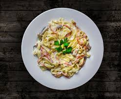

Spaghetti Carbonara

Description:
This spaghetti carbonara is a super rich "bacon and egg" pasta dish that's great to serve for company. This recipe also makes an unusual brunch offering.
Ingredients:
- 1 pound spaghetti
- 2 tablespoons olive oil, divided, or as needed
- 8 slices bacon, diced
- 1 onion, chopped
- 1 clove garlic, minced
- ¼ cup dry white wine
- 4 large eggs, beaten
- ½ cup grated Parmesan cheese
- salt and black pepper to taste
- 2 tablespoons chopped fresh parsley
- 2 tablespoons grated Parmesan cheese
Steps:
- Cook spaghetti in boiling water.
- Place diced bacon in a large skillet over medium heat; cook and stir until evenly browned.
- Add 1 tablespoon olive oil to bacon fat in the skillet. Add chopped onion and cook over medium heat until onion is translucent. Add minced garlic and cook until fragrant, about 1 minute. Add wine and cook 1 minute more.
- Return cooked bacon to the skillet; add cooked spaghetti. Add beaten eggs and cook, add 1/2 cup Parmesan cheese.
- Serve warm with chopped parsley sprinkled on top and extra Parmesan cheese at the table.